Providing feedback on Red Hat documentation
If you have a suggestion to improve this documentation, or find an error, you can contact technical support at https://access.redhat.com to open a request.
1. Introduction to automation content navigator
As a content creator, you can use automation content navigator to develop Ansible playbooks, collections, and roles that are compatible with the Red Hat Ansible Automation Platform. You can use automation content navigator in the following environments, with seamless and predictable results across them all:
-
Local development machines
-
Automation execution environments
Automation content navigator also produces an artifact file you can use to help you develop your playbooks and troubleshoot problem areas.
|
Note
|
Automation content navigator is a component of Ansible development tools. To use automation content navigator, you must install Ansible development tools. |
1.1. Uses for automation content navigator
Automation content navigator is a command line, content-creator-focused tool with a text-based user interface. You can use automation content navigator to:
-
Launch and watch jobs and playbooks.
-
Share stored, completed playbook and job run artifacts in JSON format.
-
Browse and introspect automation execution environments.
-
Browse your file-based inventory.
-
Render Ansible module documentation and extract examples you can use in your playbooks.
-
View a detailed command output on the user interface.
1.2. Automation content navigator modes
Automation content navigator operates in two modes:
- stdout mode
-
Accepts most of the existing Ansible commands and extensions at the command line.
- text-based user interface mode
-
Provides an interactive, text-based interface to the Ansible commands. Use this mode to evaluate content, run playbooks, and troubleshoot playbooks after they run using artifact files.
1.2.1. stdout mode
Use the -m stdout subcommand with automation content navigator to use the familiar Ansible commands, such as ansible-playbook within automation execution environments or on your local development environment. You can use commands you are familiar with for quick tasks.
Automation content navigator also provides extensive help in this mode:
--help-
Accessible from
ansible-navigatorcommand or from any subcommand, such asansible-navigator config --help. - subcommand help
-
Accessible from the subcommand, for example
ansible-navigator config --help-config. This help displays the details of all the parameters supported from the related Ansible command.
1.2.2. Text-based user interface mode
The text-based user interface mode provides enhanced interaction with automation execution environments, collections, playbooks, and inventory. This mode is compatible with integrated development environments (IDE), such as Visual Studio Code.
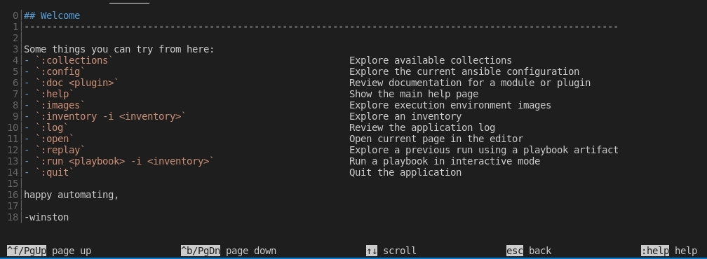
This mode includes a number of helpful user interface options:
- colon commands
-
You can access all the automation content navigator commands with a colon, such as
:runor:collections - navigating the text-based interface
-
The screen shows how to page up or down, scroll, escape to a prior screen or access
:help. - output by line number
-
You can access any line number in the displayed output by preceding it with a colon, for example
:12. - color-coded output
-
With colors enabled, automation content navigator displays items, such as deprecated modules, in red.
- pagination and scrolling
-
You can page up or down, scroll, or escape by using the options displayed at the bottom of each automation content navigator screen.
You cannot switch between modes after automation content navigator is running.
This document uses the text-based user interface mode for most procedures.
1.3. Automation content navigator commands
The automation content navigator commands run familiar Ansible CLI commands in -m stdout mode. You can use all the subcommands and options from the related Ansible CLI command. Use ansible-navigator --help for details.
| Command | Description | CLI example |
|---|---|---|
collections |
Explore available collections |
|
config |
Explore the current Ansible configuration |
|
doc |
Review documentation for a module or plugin |
|
images |
Explore execution environment images |
|
inventory |
Explore an inventory |
|
replay |
Explore a previous run using a playbook artifact |
|
run |
Run a playbook |
|
welcome |
Start at the welcome page |
|
1.4. Relationship between Ansible and automation content navigator commands
The automation content navigator commands run familiar Ansible CLI commands in -m stdout mode. You can use all the subcommands and options available in the related Ansible CLI command. Use ansible-navigator --help for details.
| automation content navigator command | Ansible CLI command |
|---|---|
|
|
|
|
|
|
|
|
|
|
2. Installing Ansible development tools
Red Hat provides two options for installing Ansible development tools.
-
Installation on a RHEL container running inside VS Code. You can install this option on MacOS, Windows, and Linux systems.
-
Installation on your local RHEL system using an RPM (Red Hat Package Manager) package.
2.1. Requirements
To install and use Ansible development tools, you must meet the following requirements. Extra requirements for Windows installations and containerized installations are indicated in the procedures.
-
Python 3.10 or later.
-
VS Code (Visual Studio Code) with the Ansible extension added. See Installing VS Code.
-
For containerized installations, the Microsoft Dev Containers VS Code extension. See Installing and configuring the Dev Containers extension.
-
A containerization platform, for example Podman, Podman Desktop, Docker, or Docker Desktop.
NoteThe installation procedure for Ansible development tools on Windows covers the use of Podman Desktop only. See Installing Podman Desktop on a Windows machine.
-
You have a Red Hat account and you can log in to the Red Hat container registry at
registry.redhat.io. For information about logging in toregistry.redhat.io, see Authenticating with the Red Hat container registry.
2.1.1. Requirements for Ansible development tools on Windows
If you are installing Ansible development tools on a container in VS Code on Windows, there are extra requirements:
-
Windows Subsystem for Linux(WSL2)
-
Podman Desktop
Installing WSL
-
Install WSL2 without a distribution:
$ `wsl --install --no-distribution`
-
Use
cgroupsv2by disablingcgroupsv1for WSL2:Edit the
%USERPROFILE%/wsl.conffile and add the following lines to forcecgroupv2usage:[wsl2] kernelCommandLine = cgroup_no_v1="all"
Installing Podman Desktop on a Windows machine
-
Install Podman Desktop. Follow the instructions in Installing Podman Desktop and Podman on Windows in the Podman Desktop documentation.
You do not need to change the default settings in the set-up wizard.
-
Ensure the podman machine is using
cgroupsv2:$ podman info | findstr cgroup
-
Test Podman Desktop:
$ podman run hello
Configuring settings for Podman Desktop
-
Add a
%USERPROFILE%\bin\docker.batfile with the following content:@echo off podman %*
This avoids having to install Docker as required by the VS Code
Dev Containerextension. -
Add the
%USERPROFILE%\bindirectory to thePATH.-
Select Settings and search for "Edit environment variables for your account" to display all of the user environment variables.
-
Highlight "Path" in the top user variables box, click Edit and add the path.
-
Click Save to set the path for any new console that you open.
-
2.1.2. Authenticating with the Red Hat container registry
All container images available through the Red Hat container catalog are hosted on an image registry,
registry.redhat.io.
The registry requires authentication for access to images.
To use the registry.redhat.io registry, you must have a Red Hat login.
This is the same account that you use to log in to the Red Hat Customer Portal (access.redhat.com) and manage your Red Hat subscriptions.
|
Note
|
If you are planning to install the Ansible development tools on a container inside VS Code,
you must log in to If you are running Ansible development tools on a container inside VS Code and you want to pull execution environments
or the |
You can use the podman login or docker login commands with your credentials to access content on the registry.
- Podman
-
$ podman login registry.redhat.io Username: my__redhat_username Password: ***********
- Docker
-
$ docker login registry.redhat.io Username: my__redhat_username Password: ***********
For more information about Red Hat container registry authentication, see Red Hat Container Registry Authentication on the Red Hat customer portal.
2.1.3. Installing VS Code
-
To install VS Code, follow the instructions on the Download Visual Studio Code page in the Visual Studio Code documentation.
2.1.4. Installing the VS Code Ansible extension
The Ansible extension adds language support for Ansible to VS Code. It incorporates Ansible development tools to facilitate creating and running automation content.
For a full description of the Ansible extension, see the Visual Studio Code Marketplace.
See Learning path - Getting Started with the Ansible VS Code Extension for tutorials on working with the extension.
To install the Ansible VS Code extension:
-
Open VS Code.
-
Click the Extensions () icon in the Activity Bar, or click , to display the Extensions view.
-
In the search field in the Extensions view, type
Ansible Red Hat. -
Select the Ansible extension and click Install.
When the language for a file is recognized as Ansible, the Ansible extension provides features such as auto-completion, hover, diagnostics, and goto. The language identified for a file is displayed in the Status bar at the bottom of the VS Code window.
The following files are assigned the Ansible language:
-
YAML files in a
/playbooksdirectory -
Files with the following double extension:
.ansible.ymlor.ansible.yaml -
Certain YAML names recognized by Ansible, for example
site.ymlorsite.yaml -
YAML files whose filename contains "playbook":
playbook.ymlorplaybook.yaml
If the extension does not identify the language for your playbook files as Ansible, follow the procedure in Associating the Ansible language to YAML files.
2.1.5. Configuring Ansible extension settings
The Ansible extension supports multiple configuration options.
You can configure the settings for the extension on a user level, on a workspace level, or for a particular directory. User-based settings are applied globally for any instance of VS Code that is opened. Workspace settings are stored within your workspace and only apply when the current workspace is opened.
It is useful to configure settings for your workspace for the following reasons:
-
If you define and maintain configurations specific to your playbook project, you can customize your Ansible development environment for individual projects without altering your preferred setup for other work. You can have different settings for a Python project, an Ansible project, and a C++ project, each optimized for the respective stack without the need to manually reconfigure settings each time you switch projects.
-
If you include workspace settings when setting up version control for a project you want to share with your team, everyone uses the same configuration for that project.
-
Open the Ansible extension settings:
-
Click the 'Extensions' icon in the activity bar.
-
Select the Ansible extension, and click the 'gear' icon and then Extension Settings to display the extension settings.
Alternatively, click to open the Settings page.
-
Enter
Ansiblein the search bar to display the settings for the extension.
-
-
Select the Workspace tab to configure your settings for the current VS Code workspace.
-
The Ansible extension settings are pre-populated. Modify the settings to suit your requirements:
-
Check the box to enable ansible-lint.
-
Check the
Ansible Execution Environment: Enabledbox to use an execution environment. -
Specify the execution environment image you want to use in the Ansible > Execution Environment: image field.
-
To use Red Hat Ansible Lightspeed, check the Ansible > Lightspeed: Enabled box, and enter the URL for Lightspeed.
-
The settings are documented on the Ansible VS Code Extension by Red Hat page in the VisualStudio marketplace documentation.
2.1.6. Associating the Ansible language to YAML files
The Ansible VS Code extension works only when the language associated with a file is set to Ansible. The extension provides features that help create Ansible playbooks, such as auto-completion, hover, and diagnostics.
The Ansible VS Code extension automatically associates the Ansible language with some files. The procedures below describe how to set the language for files that are not recognized as Ansible files.
The following procedure describes how to manually assign the Ansible language to a YAML file that is open in VS Code.
-
Open or create a YAML file in VS Code.
-
Hover the cursor over the language identified in the status bar at the bottom of the VS Code window to open the Select Language Mode list.
-
Select Ansible in the list.
The language shown in the status bar at the bottom of the VS Code window for the file is changed to Ansible.
settings.jsonAlternatively, you can add file association for the Ansible language in your settings.json file.
-
Open the
settings.jsonfile:-
Click to open the command palette.
-
Enter
Workspace settingsin the search box and select Open Workspace Settings (JSON).
-
-
Add the following code to
settings.json.{ ... "files.associations": { "*plays.yml": "ansible", "*init.yml": "yaml", } }
2.1.7. Installing and configuring the Dev Containers extension
If you are installing the containerized version of Ansible development tools, you must install the Microsoft Dev Containers extension in VS Code.
-
Open VS Code.
-
Click the Extensions () icon in the Activity Bar, or click , to display the Extensions view.
-
In the search field in the Extensions view, type
Dev Containers. -
Select the Dev Containers extension from Microsoft and click Install.
If you are using Podman or Podman Desktop as your containerization platform, you must modify the default settings in the Dev Containers extension.
-
Replace docker with podman in the
Dev Containersextension settings:-
In VS Code, open the settings editor.
-
Search for
@ext:ms-vscode-remote.remote-containers.Alternatively, click the Extensions icon in the activity bar and click the gear icon for the
Dev Containersextension.
-
-
Set
Dev > Containers:Docker Pathtopodman. -
Set
Dev > Containers:Docker Compose Pathtopodman-compose.
2.2. Installing Ansible development tools on a container inside VS Code
The Dev Containers VS Code extension requires a .devcontainer file to store settings for your dev containers.
You must use the Ansible extension to scaffold a config file for your dev container, and reopen your directory in a container in VS Code.
-
You have installed a containerization platform, for example Podman, Podman Desktop, Docker, or Docker Desktop.
-
You have a Red Hat login and you have logged in to the Red Hat registry at
registry.redhat.io. For information about logging in toregistry.redhat.io, see Authenticating with the Red Hat container registry. -
You have installed VS Code.
-
You have installed the Ansible extension in VS Code.
-
You have installed the Microsoft Dev Containers extension in VS Code.
-
If you are installing Ansible development tools on Windows, launch VS Code and connect to the WSL machine:
-
Click the
Remote() icon. -
In the dropdown menu that appears, select the option to connect to the WSL machine.
-
-
In VS Code, navigate to your project directory.
-
Click the Ansible icon in the VS Code activity bar to open the Ansible extension.
-
In the Ansible Development Tools section of the Ansible extension, scroll down to the ADD option and select Devcontainer.
-
In the Create a devcontainer page, select the Downstream container image from the Container image options.
This action adds
devcontainer.jsonfiles for both Podman and Docker in a.devcontainerdirectory. -
Reopen or reload the project directory:
-
If VS Code detects that your directory contains a
devcontainer.jsonfile, the following notification appears: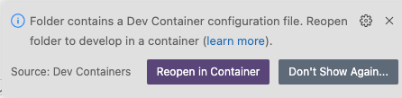
Click Reopen in Container.
-
If the notification does not appear, click the
Remote() icon. In the dropdown menu that appears, select Reopen in Container.
-
-
Select the dev container for Podman or Docker according to the containerization platform you are using.
The Remote () status in the VS Code Status bar displays
opening Remoteand a notification indicates the progress in opening the container.
When the directory reopens in a container, the Remote () status displays Dev Container: ansible-dev-container.
|
Note
|
The base image for the container is a Universal Base Image Minimal (UBI Minimal) image that uses For information about using |
2.3. Installing Ansible development tools from a package on RHEL
Ansible development tools is bundled in the Ansible Automation Platform RPM (Red Hat Package Manager) package. Refer to the RPM installation documentation for information on installing Ansible Automation Platform.
-
You have installed RHEL.
-
You have registered your system with Red Hat Subscription Manager.
-
You have installed a containerization platform, for example Podman or Docker.
-
Run the following command to check whether Simple Content Access (SCA) is enabled:
$ sudo subscription-manager statusIf Simple Content Access is enabled, the output contains the following message:
Content Access Mode is set to Simple Content Access.
-
If Simple Content Access is not enabled, attach the Red Hat Ansible Automation Platform SKU:
$ sudo subscription-manager attach --pool=<sku-pool-id>
-
-
Install Ansible development tools with the following command:
$ sudo dnf install --enablerepo=ansible-automation-platform-2.5-for-rhel-8-x86_64-rpms ansible-dev-tools$ sudo dnf install --enablerepo=ansible-automation-platform-2.5-for-rhel-9-x86_64-rpms ansible-dev-tools
Verify that the Ansible development tools components have been installed:
$ rpm -aq | grep ansibleThe output displays the Ansible packages that are installed:
ansible-sign-0.1.1-2.el9ap.noarch ansible-creator-24.4.1-1.el9ap.noarch python3.11-ansible-runner-2.4.0-0.1.20240412.git764790f.el9ap.noarch ansible-runner-2.4.0-0.1.20240412.git764790f.el9ap.noarch ansible-builder-3.1.0-0.2.20240413.git167ed5c.el9ap.noarch ansible-dev-environment-24.1.0-2.el9ap.noarch ansible-core-2.16.6-0.1.20240413.gite636132.el9ap.noarch python3.11-ansible-compat-4.1.11-2.el9ap.noarch python3.11-pytest-ansible-24.1.2-1.el9ap.noarch ansible-lint-6.14.3-4.el9ap.noarch ansible-navigator-3.4.1-2.el9ap.noarch python3.11-tox-ansible-24.2.0-1.el9ap.noarch ansible-dev-tools-2.5-2.el9ap.noarch
On successful installation, you can view the help documentation for ansible-creator:
$ ansible-creator --help usage: ansible-creator [-h] [--version] command ... The fastest way to generate all your ansible content. Positional arguments: command add Add resources to an existing Ansible project. init Initialize a new Ansible project. Options: --version Print ansible-creator version and exit. -h --help Show this help message and exit
3. Reviewing automation execution environments with automation content navigator
As a content developer, you can review your automation execution environment with automation content navigator and display the packages and collections included in the automation execution environments. Automation content navigator runs a playbook to extract and display the results.
3.1. Reviewing automation execution environments from automation content navigator
You can review your automation execution environments with the automation content navigator text-based user interface.
-
Automation execution environments
-
Review the automation execution environments included in your automation content navigator configuration.
$ ansible-navigator images
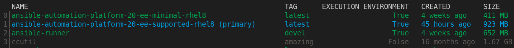
-
Type the number of the automation execution environment you want to delve into for more details.
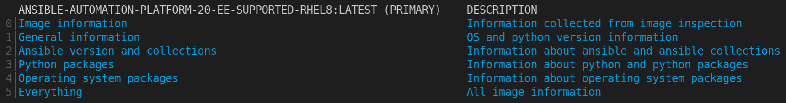
You can review the packages and versions of each installed automation execution environment and the Ansible version any included collections.
-
Optional: pass in the automation execution environment that you want to use. This becomes the primary and is the automation execution environment that automation content navigator uses.
$ ansible-navigator images --eei registry.example.com/example-enterprise-ee:latest
-
Review the automation execution environment output.
4. Reviewing inventories with automation content navigator
As a content creator, you can review your Ansible inventory with automation content navigator and interactively delve into the groups and hosts.
4.1. Reviewing inventory from automation content navigator
You can review Ansible inventories with the automation content navigator text-based user interface in interactive mode and delve into groups and hosts for more details.
-
A valid inventory file or an inventory plugin.
-
Start automation content navigator.
$ ansible-navigator
Optional: type
ansible-navigator inventory -i simple_inventory.ymlfrom the command line to view the inventory. -
Review the inventory.
:inventory -i simple_inventory.yml TITLE DESCRIPTION 0│Browse groups Explore each inventory group and group members members 1│Browse hosts Explore the inventory with a list of all hosts
-
Type
0to brows the groups.NAME TAXONOMY TYPE 0│general all group 1│nodes all group 2│ungrouped all group
The
TAXONOMYfield details the hierarchy of groups the selected group or node belongs to. -
Type the number corresponding to the group you want to delve into.
NAME TAXONOMY TYPE 0│node-0 all▸nodes host 1│node-1 all▸nodes host 2│node-2 all▸nodes host
-
Type the number corresponding to the host you want to delve into, or type
:<number>for numbers greater than 9.[node-1] 0│--- 1│ansible_host: node-1.example.com 2│inventory_hostname: node-1
-
Review the inventory output.
TITLE DESCRIPTION 0│Browse groups Explore each inventory group and group members members 1│Browse hosts Explore the inventory with a list of all hosts
5. Browsing collections with automation content navigator
As a content creator, you can browse your Ansible collections with automation content navigator and interactively delve into each collection developed locally or within Automation execution environments.
5.1. Automation content navigator collections display
Automation content navigator displays information about your collections with the following details for each collection:
- SHADOWED
-
Indicates that an additional copy of the collection is higher in the search order, and playbooks prefer that collection.
- TYPE
-
Shows if the collection is contained within an automation execution environment or volume mounted on onto the automation execution environment as a
bind_mount. - PATH
-
Reflects the collections location within the automation execution environment or local file system based on the collection TYPE field.
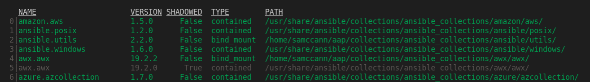
5.2. Browsing collections from automation content navigator
You can browse Ansible collections with the automation content navigator text-based user interface in interactive mode and delve into each collection. automation content navigator shows collections within the current project directory and those available in the automation execution environments
-
A locally accessible collection or installed automation execution environments.
-
Start automation content navigator
$ ansible-navigator
-
Browse the collection. Alternately, you can type
ansible-navigator collectionsto directly browse the collections.$ :collections
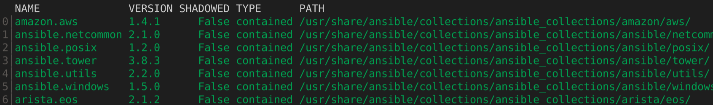
-
Type the number of the collection you want to explore.
:4
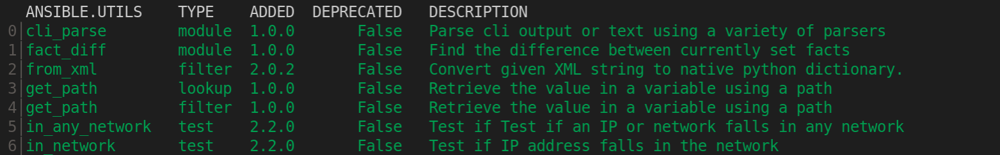
-
Type the number corresponding to the module you want to delve into.
ANSIBLE.UTILS.IP_ADDRESS: Test if something in an IP address 0│--- 1│additional_information: {} 2│collection_info: 3│ authors: 4│ - Ansible Community 5│ dependencies: {} 6│ description: Ansible Collection with utilities to ease the management, manipulation, 7│ and validation of data within a playbook 8│ documentation: null 9│ homepage: null 10│ issues: null 11│ license: [] 12│ license_file: LICENSE 13│ name: ansible.utils 14│ namespace: ansible 15│ path:/usr/share/ansible/collections/ansible_collections/ansible/utils/ 16│ readme: README.md <... output truncated...> -
Optional: jump to the documentation examples for this module.
:{{ examples }} 0│ 1│ 2│#### Simple examples 3│ 4│- name: Check if 10.1.1.1 is a valid IP address 5│ ansible.builtin.set_fact: 6│ data: "{{ '10.1.1.1' is ansible.utils.ip_address }}" 7│ 8│# TASK [Check if 10.1.1.1 is a valid IP address] ********************* 9│# ok: [localhost] => { 10│# "ansible_facts": { 11│# "data": true 12│# }, 13│# "changed": false 14│# } 15│ -
Optional: open the example in your editor to copy it into a playbook.
:open
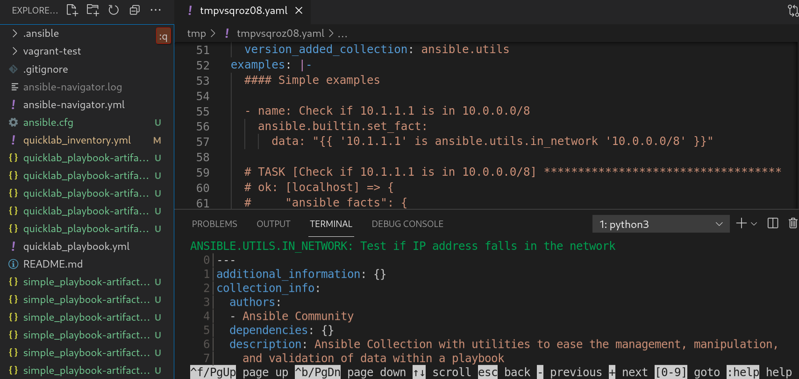
-
Browse the collection list.
5.3. Review documentation from automation content navigator
You can review Ansible documentation for collections and plugins with the automation content navigator text-based user interface in interactive mode. automation content navigator shows collections within the current project directory and those available in the automation execution environments
-
A locally accessible collection or installed automation execution environments.
-
Start automation content navigator
$ ansible-navigator
-
Review the module you are interested in. Alternately, you can type
ansible-navigator docto access the documentation.:doc ansible.utils.ip_address
ANSIBLE.UTILS.IP_ADDRESS: Test if something in an IP address 0│--- 1│additional_information: {} 2│collection_info: 3│ authors: 4│ - Ansible Community 5│ dependencies: {} 6│ description: Ansible Collection with utilities to ease the management, manipulation, 7│ and validation of data within a playbook 8│ documentation: null 9│ homepage: null 10│ issues: null 11│ license: [] 12│ license_file: LICENSE 13│ name: ansible.utils 14│ namespace: ansible 15│ path:/usr/share/ansible/collections/ansible_collections/ansible/utils/ 16│ readme: README.md <... output truncated...> -
Jump to the documentation examples for this module.
:{{ examples }} 0│ 1│ 2│#### Simple examples 3│ 4│- name: Check if 10.1.1.1 is a valid IP address 5│ ansible.builtin.set_fact: 6│ data: "{{ '10.1.1.1' is ansible.utils.ip_address }}" 7│ 8│# TASK [Check if 10.1.1.1 is a valid IP address] ********************* 9│# ok: [localhost] => { 10│# "ansible_facts": { 11│# "data": true 12│# }, 13│# "changed": false 14│# } 15│ -
Optional: open the example in your editor to copy it into a playbook.
:open
See Automation content navigator general settings for details on how to set up your editor.
6. Running Ansible playbooks with automation content navigator
As a content creator, you can execute your Ansible playbooks with automation content navigator and interactively delve into the results of each play and task to verify or troubleshoot the playbook. You can also execute your Ansible playbooks inside an execution environment and without an execution environment to compare and troubleshoot any problems.
6.1. Executing a playbook from automation content navigator
You can run Ansible playbooks with the automation content navigator text-based user interface to follow the execution of the tasks and delve into the results of each task.
-
A playbook.
-
A valid inventory file if not using
localhostor an inventory plugin.
-
Start automation content navigator
$ ansible-navigator
-
Run the playbook.
$ :run
-
Optional: type
ansible-navigator run simple-playbook.yml -i inventory.ymlto run the playbook. -
Verify or add the inventory and any other command line parameters.
INVENTORY OR PLAYBOOK NOT FOUND, PLEASE CONFIRM THE FOLLOWING ───────────────────────────────────────────────────────────────────────── Path to playbook: /home/ansible-navigator_demo/simple_playbook.yml Inventory source: /home/ansible-navigator-demo/inventory.yml Additional command line parameters: Please provide a value (optional) ────────────────────────────────────────────────────────────────────────── Submit Cancel -
Tab to
Submitand hit Enter. You should see the tasks executing.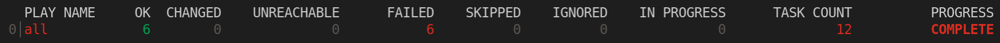
-
Type the number next to a play to step into the play results, or type
:<number>for numbers above 9.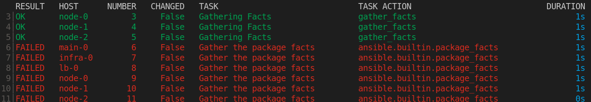
Notice failed tasks show up in red if you have colors enabled for automation content navigator.
-
Type the number next to a task to review the task results, or type
:<number>for numbers above 9.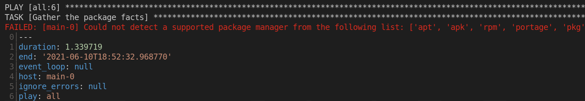
-
Optional: type
:docbring up the documentation for the module or plugin used in the task to aid in troubleshooting.ANSIBLE.BUILTIN.PACKAGE_FACTS (MODULE) 0│--- 1│doc: 2│ author: 3│ - Matthew Jones (@matburt) 4│ - Brian Coca (@bcoca) 5│ - Adam Miller (@maxamillion) 6│ collection: ansible.builtin 7│ description: 8│ - Return information about installed packages as facts. <... output omitted ...> 11│ module: package_facts 12│ notes: 13│ - Supports C(check_mode). 14│ options: 15│ manager: 16│ choices: 17│ - auto 18│ - rpm 19│ - apt 20│ - portage 21│ - pkg 22│ - pacman <... output truncated ...>
6.2. Reviewing playbook results with an automation content navigator artifact file
Automation content navigator saves the results of the playbook run in a JSON artifact file. You can use this file to share the playbook results with someone else, save it for security or compliance reasons, or review and troubleshoot later. You only need the artifact file to review the playbook run. You do not need access to the playbook itself or inventory access.
-
A automation content navigator artifact JSON file from a playbook run.
-
Start automation content navigator with the artifact file.
$ ansible-navigator replay simple_playbook_artifact.json
-
Review the playbook results that match when the playbook ran.
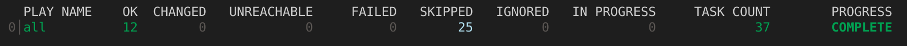
-
You can now type the number next to the plays and tasks to step into each to review the results, as you would after executing the playbook.
7. Reviewing your Ansible configuration with automation content navigator
As a content creator, you can review your Ansible configuration with automation content navigator and interactively delve into settings.
7.1. Reviewing your Ansible configuration from automation content navigator
You can review your Ansible configuration with the automation content navigator text-based user interface in interactive mode and delve into the settings. Automation content navigator pulls in the results from an accessible Ansible configuration file, or returns the defaults if no configuration file is present.
-
You have authenticated to the Red Hat registry if you need to access additional automation execution environments. See Red Hat Container Registry Authentication for details.
-
Start automation content navigator
$ ansible-navigator
Optional: type
ansible-navigator configfrom the command line to access the Ansible configuration settings. -
Review the Ansible configuration.
:config
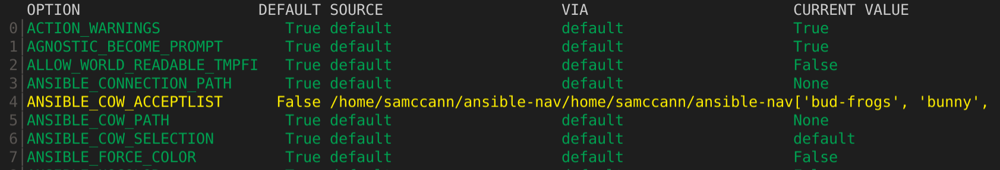
Some values reflect settings from within the automation execution environments needed for the automation execution environments to function. These display as non-default settings you cannot set in your Ansible configuration file.
-
Type the number corresponding to the setting you want to delve into, or type
:<number>for numbers greater than 9.ANSIBLE COW ACCEPTLIST (current: ['bud-frogs', 'bunny', 'cheese']) (default: 0│--- 1│current: 2│- bud-frogs 3│- bunny 4│- cheese 5│default: 6│- bud-frogs 7│- bunny 8│- cheese 9│- daemon
The output shows the current setting as well as the default. Note the source in this example is env since the setting comes from the automation execution environments.
-
Review the configuration output.
8. Automation content navigator configuration settings
As a content creator, you can configure automation content navigator to suit your development environment.
8.1. Creating an automation content navigator settings file
You can alter the default automation content navigator settings through:
-
The command line
-
Within a settings file
-
As an environment variable
Automation content navigator checks for a settings file in the following order and uses the first match:
-
ANSIBLE_NAVIGATOR_CONFIG- The settings file path environment variable if set. -
./ansible-navigator.<ext>- The settings file within the current project directory, with no dot in the file name. -
\~/.ansible-navigator.<ext>- Your home directory, with a dot in the file name.
Consider the following when you create an automation content navigator settings file:
-
The settings file can be in
JSONorYAMLformat. -
For settings in
JSONformat, the extension must be.json. -
For settings in
YAMLformat, the extension must be.ymlor.yaml. -
The project and home directories can only contain one settings file each.
-
If automation content navigator finds more than one settings file in either directory, it results in an error.
You can copy the example settings file below into one of those paths to start your ansible-navigator settings file.
---
ansible-navigator:
# ansible:
# config: /tmp/ansible.cfg
# cmdline: "--forks 15"
# inventories:
# - /tmp/test_inventory.yml
# playbook: /tmp/test_playbook.yml
# ansible-runner:
# artifact-dir: /tmp/test1
# rotate-artifacts-count: 10
# timeout: 300
# app: run
# collection-doc-cache-path: /tmp/cache.db
# color:
# enable: False
# osc4: False
# editor:
# command: vim_from_setting
# console: False
# documentation:
# plugin:
# name: shell
# type: become
# execution-environment:
# container-engine: podman
# enabled: False
# environment-variables:
# pass:
# - ONE
# - TWO
# - THREE
# set:
# KEY1: VALUE1
# KEY2: VALUE2
# KEY3: VALUE3
# image: test_image:latest
# pull-policy: never
# volume-mounts:
# - src: "/test1"
# dest: "/test1"
# label: "Z"
# help-config: True
# help-doc: True
# help-inventory: True
# help-playbook: False
# inventory-columns:
# - ansible_network_os
# - ansible_network_cli_ssh_type
# - ansible_connection
logging:
# append: False
level: critical
# file: /tmp/log.txt
# mode: stdout
# playbook-artifact:
# enable: True
# replay: /tmp/test_artifact.json
# save-as: /tmp/test_artifact.json8.2. Automation content navigator general settings
The following table describes each general parameter and setting options for automation content navigator.
| Parameter | Description | Setting options |
|---|---|---|
ansible-runner-artifact-dir |
The directory path to store artifacts generated by ansible-runner. |
Default: No default value set CLI: ENV: Settings file: |
ansible-runner-rotate-artifacts-count |
Keep ansible-runner artifact directories, for last n runs. If set to 0, artifact directories are not deleted. |
Default: No default value set CLI: ENV: Settings file: |
ansible-runner-timeout |
The timeout value after which |
Default: No default value set CLI: ENV: Settings file: |
app |
Entry point for automation content navigator. |
Choices: Default: CLI example: ENV: Settings file: |
cmdline |
Extra parameters passed to the corresponding command. |
Default: No default value CLI: positional ENV: Settings file: |
collection-doc-cache-path |
The path to the collection doc cache. |
Default: CLI: ENV: Settings file: |
container-engine |
Specify the container engine ( |
Choices: Default: CLI: ENV: Settings file: |
display-color |
Enable the use of color in the display. |
Choices: Default: CLI: ENV: Settings file: |
editor-command |
Specify the editor used by automation content navigator |
Default:* vi +{line_number} {filename} CLI: ENV: Settings file: |
editor-console |
Specify if the editor is console based. |
Choices: Default: CLI: ENV: Settings file: |
execution-environment |
Enable or disable the use of an automation execution environment. |
Choices: Default: CLI: ENV:* Settings file: |
execution-environment-image |
Specify the name of the automation execution environment image. |
Default: CLI: ENV: Settings file: |
execution-environment-volume-mounts |
Specify volume to be bind mounted within an automation execution environment ( |
Default: No default value set CLI: ENV: Settings file: |
log-append |
Specify if log messages should be appended to an existing log file, otherwise a new log file is created per session. |
Choices: Default: True CLI: ENV: Settings file: |
log-file |
Specify the full path for the automation content navigator log file. |
Default: CLI: ENV: Settings file: |
log-level |
Specify the automation content navigator log level. |
Choices: Default: CLI: ENV: Settings file: |
mode |
Specify the user-interface mode. |
Choices: Default: CLI: ENV: Settings file: |
osc4 |
Enable or disable terminal color changing support with OSC 4. |
Choices: Default: CLI: ENV: Settings file: |
pass-environment-variable |
Specify an exiting environment variable to be passed through to and set within the automation execution environment ( |
Default: No default value set CLI: ENV: Settings file: |
pull-policy |
Specify the image pull policy.
|
Choices: Default: CLI: ENV: Settings file: |
set-environment-variable |
Specify an environment variable and a value to be set within the automation execution environment |
Default: No default value set CLI: ENV: Settings file: |
8.3. Automation content navigator config subcommand settings
The following table describes each parameter and setting options for the automation content navigator config subcommand.
| Parameter | Description | Setting options |
|---|---|---|
config |
Specify the path to the Ansible configuration file. |
Default: No default value set CLI: ENV: Settings file: |
help-config |
Help options for the |
Choices:* Default: CLI: ENV: Settings file: |
8.4. automation content navigator doc subcommand settings
The following table describes each parameter and setting options for the automation content navigator doc subcommand.
| Parameter | Description | Setting options |
|---|---|---|
help-doc |
Help options for the |
Choices: Default: CLI: ENV: Settings file: |
plugin-name |
Specify the plugin name. |
Default: No default value set CLI: positional ENV: Settings file: |
plugin-type |
Specify the plugin type. |
Choices: Default: CLI: ENV: Settings file: |
8.5. Automation content navigator inventory subcommand settings
The following table describes each parameter and setting options for the automation content navigator inventory subcommand.
| Parameter | Description | Setting options |
|---|---|---|
help-inventory |
Help options for the |
Choices: Default: CLI: ENV: Settings file: |
inventory |
Specify an inventory file path or comma separated host list. |
Default: no default value set CLI: ENV: Settings file: |
inventory-column |
Specify a host attribute to show in the inventory view. |
Default: No default value set CLI: ENV:* |
8.6. Automation content navigator replay subcommand settings
The following table describes each parameter and setting options for the automation content navigator replay subcommand.
| Parameter | Description | Setting options |
|---|---|---|
playbook-artifact-replay |
Specify the path for the playbook artifact to replay. |
Default: No default value set CLI: positional ENV: Settings file: |
8.7. Automation content navigator run subcommand settings
The following table describes each parameter and setting options for the automation content navigator run subcommand.
| Parameter | Description | Setting options |
|---|---|---|
playbook-artifact-replay |
Specify the path for the playbook artifact to replay. |
Default: No default value set CLI: positional ENV: Settings file: |
help-playbook |
Help options for the |
Choices: Default: CLI: ENV: Settings file: |
inventory |
Specify an inventory file path or comma separated host list. |
Default: no default value set CLI: ENV: Settings file: |
inventory-column |
Specify a host attribute to show in the inventory view. |
Default: No default value set CLI: ENV:* |
playbook |
Specify the playbook name. |
Default: No default value set CLI: positional ENV: Settings file:* |
playbook-artifact-enable |
Enable or disable the creation of artifacts for completed playbooks. Note: not compatible with |
Choices: Default: CLI: |
playbook-artifact-save-as |
Specify the name for artifacts created from completed playbooks. |
Default: CLI: ENV: Settings file: |
9. Troubleshooting Ansible content with automation content navigator
As a content creator, you can troubleshoot your Ansible content (collections, automation execution environments, and playbooks) with automation content navigator and interactively troubleshoot the playbook. You can also compare results inside or outside an automation execution environment and troubleshoot any problems.
9.1. Reviewing playbook results with an automation content navigator artifact file
Automation content navigator saves the results of the playbook run in a JSON artifact file. You can use this file to share the playbook results with someone else, save it for security or compliance reasons, or review and troubleshoot later. You only need the artifact file to review the playbook run. You do not need access to the playbook itself or inventory access.
-
A automation content navigator artifact JSON file from a playbook run.
-
Start automation content navigator with the artifact file.
$ ansible-navigator replay simple_playbook_artifact.json
-
Review the playbook results that match when the playbook ran.
-
You can now type the number next to the plays and tasks to step into each to review the results, as you would after executing the playbook.
9.2. Frequently asked questions about automation content navigator
Use the following automation content navigator FAQ to help you troubleshoot problems in your environment.
- Where should the
ansible.cfgfile go when using an automation execution environment? -
The easiest place to have the
ansible.cfgfile is in the project directory next to the playbook. The playbook directory is automatically mounted in the automation execution environment and automation content navigator finds theansible.cfgfile there. If theansible.cfgfile is in another directory, set theANSIBLE_CONFIGvariable, and specify the directory as a custom volume mount. (See automation content navigator settings forexecution-environment-volume-mounts) - Where should the
ansible.cfgfile go when not using an automation execution environment? -
Ansible looks for the
ansible.cfgin the typical locations when not using an automation execution environment. See Ansible configuration settings for details. - Where should Ansible collections be placed when using an automation execution environment?
-
The easiest place to have Ansible collections is in the project directory, in a playbook adjacent collections directory (for example,
ansible-galaxy collections install ansible.utils -p ./collections). The playbook directory is automatically mounted in the automation execution environment and automation content navigator finds the collections there. Another option is to build the collections into an automation execution environment using Ansible Builder. This helps content creators author playbooks that are production ready, since automation controller supports playbook adjacent collection directories. If the collections are in another directory, set theANSIBLE_COLLECTIONS_PATHSvariable and configure a custom volume mount for the directory. (See Automation content navigator general settings forexecution-environment-volume-mounts). - Where should Ansible collections be placed when not using an automation execution environment?
-
When not using an automation execution environment, Ansible looks in the default locations for collections. See the Using Ansible collections guide.
- Why does the playbook hang when
vars_promptorpause/promptis used? -
By default, automation content navigator runs the playbook in the same manner that automation controller runs the playbook. This helps content creators author playbooks that are production ready. If you cannot avoid the use of
vars_promptorpause\prompt, disablingplaybook-artifactcreation causes automation content navigator to run the playbook in a manner that is compatible withansible-playbookand allows for user interaction. - Why does automation content navigator change the terminal colors or look terrible?
-
Automation content navigator queries the terminal for its OSC4 compatibility. OSC4, 10, 11, 104, 110, 111 indicate the terminal supports color changing and reverting. It is possible that the terminal is misrepresenting its ability. You can disable OSC4 detection by setting
--osc4 false. (See Automation content navigator general settings for how to handle this with an environment variable or in the settings file). - How can I change the colors used by automation content navigator?
-
Use
--osc4 falseto force automation content navigator to use the terminal defined colors. (See Automation content navigator general settings for how to handle this with an environment variable or in the settings file). - What is with all these
site-artifact-2021-06-02T16:02:33.911259+00:00.jsonfiles in the playbook directory? -
Automation content navigator creates a playbook artifact for every playbook run. These can be helpful for reviewing the outcome of automation after it is complete, sharing and troubleshooting with a colleague, or keeping for compliance or change-control purposes. The playbook artifact file has the detailed information about every play and task, and the
stdoutfrom the playbook run. You can review playbook artifacts withansible-navigator replay <filename>or:replay <filename>while in an automation content navigator session. You can review all playbook artifacts with both--mode stdoutand--mode interactive, depending on the required view. You can disable playbook artifacts writing and the default file naming convention. (See Automation content navigator general settings for how to handle this with an environment variable or in the settings file). - Why does
viopen when I use:open? -
Automation content navigator opens anything showing in the terminal in the default editor. The default is set to either
vi +{line_number} {filename}or the current value of theEDITORenvironment variable. Related to this is theeditor-consolesetting which indicates if the editor is console or terminal based. Here are examples of alternate settings that might be useful:# emacs ansible-navigator: editor: command: emacs -nw +{line_number} {filename} console: true# vscode ansible-navigator: editor: command: code -g {filename}:{line_number} console: false#pycharm ansible-navigator: editor: command: charm --line {line_number} {filename} console: false - What is the order in which configuration settings are applied?
-
The automation content navigator configuration system pulls in settings from various sources and applies them hierarchically in the following order (where the last applied changes are the most prevalent):
-
Default internal values
-
Values from a settings file
-
Values from environment variables
-
Flags and arguments specified on the command line
-
While issuing
:commands within the text-based user interface
-
- Something did not work, how can I troubleshoot it?
-
Automation content navigator has reasonable logging messages. You can enable
debuglogging with--log-level debug. If you think you might have found a bug, log an issue and include the details from the log file.